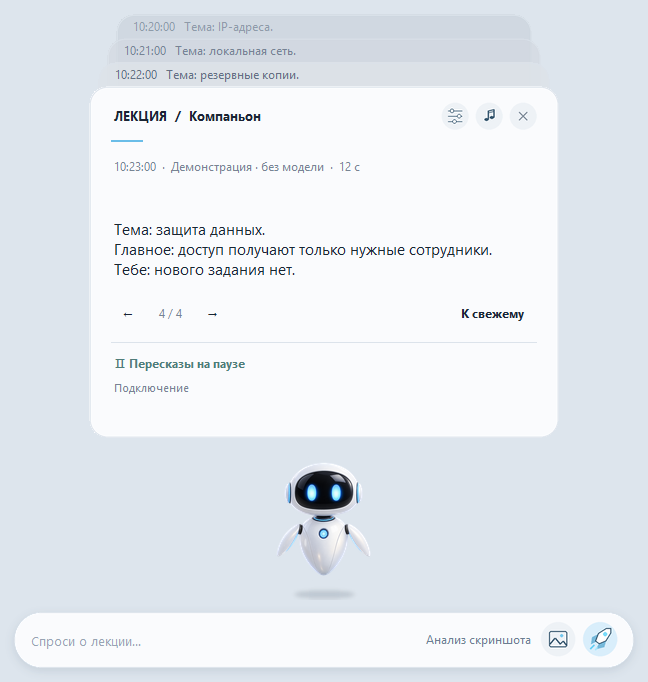

Windows 11 · x64
Lecture Companion
Помогает следить за лекцией в Teams: локально обобщает субтитры и объясняет выбранный слайд.
Предварительная версия · 2.4Перед запускомTeams Desktop и совместимые драйверы; рекомендуются 32 ГБ RAM, внутренняя SSD и 25 ГБ свободного места для частей, ZIP и распаковки. EXE не подписан; проверка на втором чистом ПК не выполнена.
Все четыре части ZIP и JoinPortable.cmd должны находиться в одной папке. Скрипт проверяет размеры и SHA-256. После сборки распакуйте архив на внутренний SSD.


Как это работает
- Скачать и собрать 4 части
- Включить субтитры Teams
- Разобрать текст или слайд
Первые шаги
Скачайте четыре части и JoinPortable.cmd в одну папку (всего около 5,8 ГБ). Запустите JoinPortable.cmd для проверки и сборки ZIP, распакуйте целиком и откройте LectureCompanion.exe.